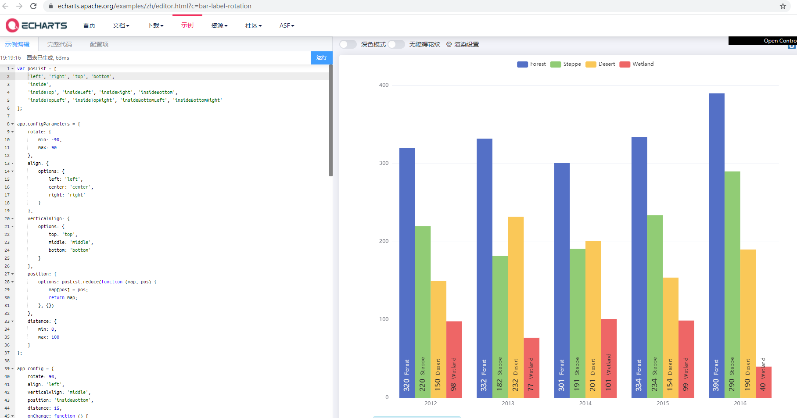
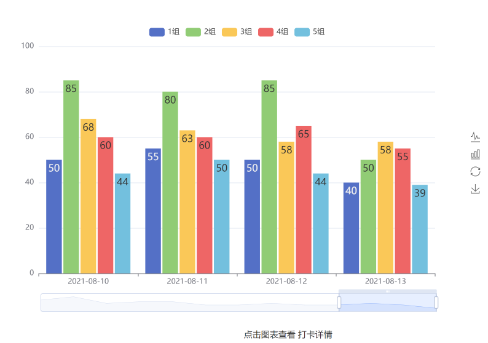

上一期，谈了如何用 Python 打造运营系统 的过程，虽然以及很方便了，但是还有很多需要人工执行的地方，不是特别方便。
更重要的是无法及时为大家提供实时数据，加上有时工作繁忙可以忘掉，实属不便。
那么再进一步 —— 做成在线版的，可以随时浏览，方便快捷，还等什么，开干吧。
规划 上一期，做的工作主要是数据整合，数据处理，报表数据输出，已经做了大部分工作，现在的问题是如何 Web 化。
Web 化的主要目的是，让用户通过浏览器访问到报表数据，所以改造的重点在于将数据展示部分的用前端技术实现。
于是需要做的是，设计展示页面 ，定义与后端的 数据接口 ，选择服务器 部署 。
而其中重点的工作是 展示页面 和 数据接口。
再进行具体工作之前，还有个一个重要工作就是 —— 选择技术路线 ，即用什么技术做 Web 化实现。
那需要基于 Python 的 Web 框架来说，可以选择 Flask 和 Django。
鉴于项目比较小，另外之前写了一系列 Flask 的文章 ，对 Flask 比较熟，所以选择了 Flask。
然后将之前实现的功能作为 Web 项目的外部模块引入，承担数据读取任务。
因为 Web 服务主要是通过数据读取的，对于打卡数据的抓取，和成员积分的计算，需要定时任务来完成，虽然可以在 Web 服务中利用 scheduled 来写计划任务，为了简便，直接使用 Linux 服务的 crontab 命令来定时执行。
展示页面 之前写过一篇 nginx 日志可视化 ，其中用的是 Bootstrap 的前端框架，直接拿来用。
真是，平时多积累，用时显身手！
需要的页面有 打卡页面、成员数据、组长数据、开单记录。
从哪里开始呢？不是具体的页面，而是从制作模板页面开始。
模板页面 实现前台功能，比较省力的方式是使用模板，即，将页面共同的元素写在模板上，以重复利用。
创建一个页面模板 layout.html，模板中写完页面主题框架，以及引入 css，js 文件，并且为可替换部分预留区域。
可替换部分有，样式，导航菜单、主体页面、脚本。
因为最后是用 Flask 作为 Web 服务的，所以采用 Jinja2 做为模板引擎。
代码大致如下：
1 2 3 4 5 6 7 8 9 10 11 12 13 14 15 16 17 18 19 20 21 22 23 24 25 26 27 28 29 30 31 32 33 34 35 36 37 38 39 40 41 {# <!DOCTYPE html > <html lang ="zh-CN" > <head > <meta charset ="utf-8" > <meta name ="viewport" content ="width=device-width, initial-scale=1" > <title > 训练营311班</title > <link href ="../static/css/bootstrap.min.css" type ='text/css' rel ="stylesheet" > <link href ="../static/css/dashboard.css" rel ="stylesheet" > {% block head %} {% endblock %} </head > <body > <nav class ="navbar navbar-inverse navbar-fixed-top" > <div class ="container-fluid" > <div class ="navbar-header" > <button type ="button" class ="navbar-toggle collapsed" data-toggle ="collapse" data-target ="#navbar" aria-expanded ="false" aria-controls ="navbar" > <span class ="sr-only" > Toggle navigation</span > <span class ="icon-bar" > </span > <span class ="icon-bar" > </span > <span class ="icon-bar" > </span > </button > <a class ="navbar-brand" href ="/" > 销售训练营 311班</a > </div > <div id ="navbar" class ="navbar-collapse collapse" > <ul class ="nav navbar-nav" > {% block menu%} {% endblock %} </ul > </div > </div > </nav > <div class ="container-fluid" > <div class ="row" > {% block main%} {% endblock %} </div > </div > <script src ="../static/js/bootstrap.min.js" type ="text/javascript" > </script > {% block script %} {% endblock %} </body > </html > #}
可以看出页面采用的是 Bootstrap 框架 ，加载了 Bootstrap 必要的 Css 和 js 库。
然后加入了页面框架，并预留了菜单、页面主体、定制的脚本位置。
打卡页面 打卡页面需要展示打卡率，最好的方式是用图表。
首选 ECharts ，因为 ECharts 很成熟，而且易用。
然后在 ECharts 示例 中找到合适的图表。
值得点赞的是，ECharts 示例中，提供了示例代码，直接复制使用即可。
我们选用 柱状图标签旋转

将代码复制到页面中。
图表数据通过 Flask 视图加载是提供。
部分代码如下：
1 2 3 4 5 6 7 8 9 10 11 12 13 14 15 16 17 18 19 20 21 22 23 24 25 26 27 28 29 30 31 32 33 34 35 36 37 38 39 40 41 42 43 44 45 {# {% extends "layout.html" %} {% block menu %} <li class ="active" > <a href ="/check_rate" > 打卡率</a > </li > <li > <a href ="/memberdata" > 成员数据</a > </li > <li > <a href ="/teamleader" > 组长数据</a > </li > <li > <a href ="/sale" > 开单记录</a > </li > {% endblock %} {% block main %} <div class ="col-sm-9 col-sm-offset-3 col-md-10 col-md-offset-2 main" > <h1 class ="page-header" > {{title}}</h1 > <div class ="row placeholders" > <div class ="col-xs-12 col-sm-8 col-lg-10 placeholder" style ="height:500px;" id ="main" > </div > <div class ="col-lg-4 col-lg-offset-4 col-sm-6 col-sm-offset-3 col-xs-8 col-xs-offset-2" > <div id ="detail" > 点击图表查看 打卡详情</div > </div > </div > </div > {% endblock %} {% block script %} <script src ="../static/js/jquery.2.0.3.min.js" type ="text/javascript" > </script > <script src ="../static/js/echarts5.min.js" charset ="utf-8" > </script > <script type ="text/javascript" > var app = {}; var chartDom = document .getElementById('main' ); var myChart = echarts.init(chartDom); ...<省略 > ... var option = { title: { show: true , left: 'center' , top: 'top' }, ...<省略 > ... dataset: { source: {{ data | safe }} }, ...<省略 > ... } ...<省略 > ... {% endblock %} #}
引入模板页面 layout.html
等 为替换的内容
的意思是 使用视图中的值 data 填充到这里，后面的 safe 是一个过滤器，表示替换部分不做 Html 安全字符转化
数据缩放 这里还需要解决一个问题，就是随着日期的增加，图表就是很密，不好观看，ECharts 提供一种图表缩放工具 DataZoom,
可以通过拖动和改变大小控制数据的展示范围，配置很简单，加在图表的配置中就好了，例如我的写法是：
1 2 3 4 5 dataZoom: [{ type: 'slider' , start: 60 , end: 100 }],
start 和 end 表示数据范围开始和结束的百分比，这一点特别赞
详细数据 图表展示后，如果想知道某一天某个组详细的打卡数据怎么办？
为了便于使用，利用 EChart 的事件机制，当点击一个柱状图时，显示出详细信息。
实现很简单，就是个图表对象加载一个事件，载事件里，使用 Ajax 加载并显示数据就好：
1 2 3 4 5 6 7 8 9 10 11 12 13 14 15 16 17 18 19 20 21 22 23 24 25 myChart.on('click' , 'series' , function (params ) console .log(params); $.ajax({ url: "/api/teamcheckdetail" , data: { team: params.seriesName, date: params.name } }).done(function (response ) data = response.data; $("#detail" ).jsGrid({ editing: false , sorting: false , autoload: false , data: data, fields: [{ 'name' : 'name' , 'title' : '昵称' }, { 'name' : 'check' , 'title' : '打卡' }] }); }); });
事件争对于 系列(series) 被点击
/api/teamcheckdetail 为后台数据接口（详见 API 设计）$("#detail").jsGrid() 是一个 jsGrid 做的表格，加载方法是重新炫耀一个表格
到此，最复杂的打卡页面就搞定了，看看效果吧：

数据列表 成员数据、组长数据 以及 开单数据，都是用数据表格展示的，使用了 jsGrid 框架，主要是方便易用。
在页面上定义一个 div，并设置 id，然后用 jsGrid 方法渲染一些就可以了，和简单。
其实在上一节，我们以及看到如何渲染了，需要做的事定义后台 API 接口，通过 Ajax 加载数据就可以了：
1 2 3 4 5 6 7 8 9 10 11 12 13 14 15 16 17 18 19 20 21 22 23 24 25 26 27 $("#jsGrid" ).jsGrid({ height: '600' , width: "100%" , editing: false , sorting: false , autoload: true , controller: { loadData: function ( var d = $.Deferred(); $.ajax({ url: "/api/memberdata" , }).done(function (response ) d.resolve(response.data); }); return d.promise(); } }, fields: [{'name' : '组' , type : "text" }, {'name' :'昵称' , type : "text" }, {'name' :'开单' , type : "text" }, {'name' :'分享' , type : "text" }, {'name' :'打卡' , type : "text" }, {'name' :'提问' , type : "text" }, {'name' :'解答整理' , type : "text" }, {'name' :'积分' , type : "text" }, ] });
controller 里的 loadData 在页面元素绘制完成调用loadData 方法返回一个 promise ，等数据获取成功之后，会渲染到页面上
那么 组长数据 和 开单数据 是类似的，就不赘述了。
数据接口 Flask 实现后台接口，特别简单，只需要再接口相应方法前，加句注解 就好了，例如 打卡率的接口：
1 2 3 4 5 6 7 8 9 10 11 @app.route('/') @app.route('/check_rate') def check_rate () : data = dataSource.show_check_rate(rtype='dict' ) ret = [['date' , '1组' , '2组' , '3组' , '4组' , '5组' ]] for d in data: row = [] for k in d: row.append(d[k]) ret.append(row) return render_template('check_rate.html' , title='打卡率' , data=ret)
@app.route 是个注解，以指定 URL 路径，由 check_rate 方法做相应dataSource 是对上一期数据处理功能的一个封装，调用相应方法，获取数据render_template 是 Flask 响应页面合成的方法，第一个参数是模板页面，后面的命名参数是需要替换的数据
打卡率页面的数据，是合成响应页面时提供的，还有一些页面需要前台通过 Ajax 方式获取，接口怎么写呢？
用获取成员数据作为例子：
1 2 3 4 @app.route('/api/memberdata') def api_memberdata () : data = {'data' : dataSource.show_member_score(rtype='dict' )} return jsonify(data)
通过封装的数据处理类，得到数据
调用 Flask 的 jsonify 方法将数据作为 json 响应提供给前台
那么，其他的页面响应和数据响应接口是类似的，更详细的代码，见代码示例。
部署 主要的开发工作完成后，就可以部署了。
之前写过 部署 Flask ，用的是 uWSGI ，刚好照搬。
如果没有 git 或者 svn 的代码管理，就直接将复制到服务器上，安装 Flask，就可以启动了。
没有问题，配置一下 Nginx 的反向代理:
1 2 3 4 5 6 7 8 9 10 server { listen 80 ; server_name stc.example.com; access_log /var/log/nginx/access_stc.log main; location / { proxy_buffers 8 1024k ; proxy_buffer_size 1024k ; proxy_pass http://127.0.0.1:5000; } }
server_name 为域名，也就是通过这个地址可以访问到系统的，在此之前需要申请并备案域名 location 里的 proxy_pass 是服务器上我们的 Web 服务的地址Nginx 的作用是做一个代理，将通过 stc.example.com 的访问转发到 真是地址上
配置完成之后，重启一下 Nginx 服务，如果没有问题，就可以通过设置的域名访问了。
维护 开发部署完成，还不是真的完成，还需要做运维。
以这个项目为例，运维工作主要有两部分：
数据处理
服务器维护
只有不断地做数据处理，才能及时更新数据，这个工作对于 Web 系统来说，属于支撑性的，所以没必要让 Web 系统来负责。
在 Linux 系统上，有个 crontab 命令，用它做定时数据数据，好处是开发量少，另外不会因为 Web 系统的问题导致数据处理不及时。
服务器维护，就是保证服务器不会因为异常停止工作，一般使用像 uWSGI 类的服务器都有自维护功能，如果没有使用的话，就需要自己处理了，比如写个监控脚本，当发现服务器不工作时，重启服务，并发送通知。
强烈建议 使用安全的 Web 服务器，特别是在生产环境中
总结 到此，系统的搭建完成了，再也不用我每天为生成报表耗费时间了，可以将更多的时间用在更重要的事情上了。
如果你认真读了，就会发现，每一块的知识技术，都是很简单的，但如何将这些简单的点拼接起来，是需要大量的知识记录和历练的。
而我之所以可以这样做，是因为在这里的长期输出，从最基础的 Web 系统开始，一点一点了解整个 Web 系统需要的基础，当需要完成一个系统时，大部分都是来自平时的积累。
期望这篇文章对你有所启发，一切都源自持续积累，比心！